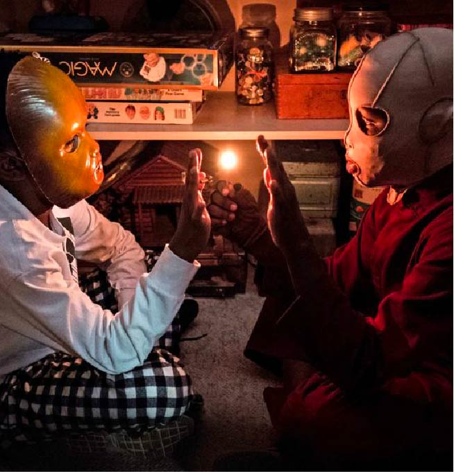
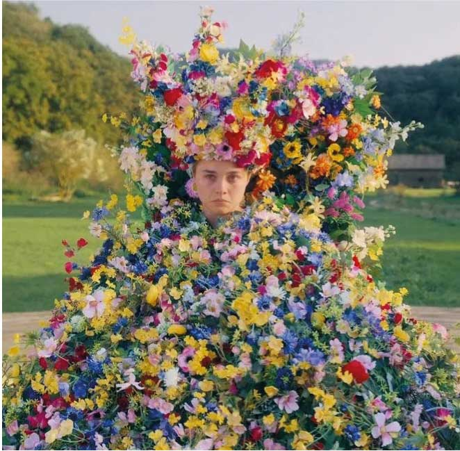
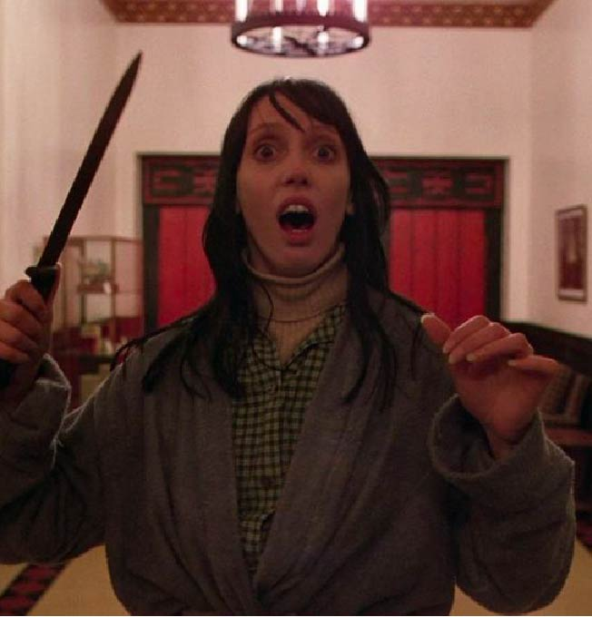

Us
“Us” talks about the collapse of American society, double standards, the meaninglessness of xenophobia, the trauma of the past, and shame. More precisely, it hints at all this, without really focusing on most of the listed topics. The film tells about the girl Adelaide who, as a child, went with her parents to an amusement park somewhere on the ocean coast. Having fought off her father, who was playing Whack-a-mole, the girl went into a strange horror room and there, among the labyrinths, she met someone. Many years later, she, already with her husband and children, comes to the same place and against her own will again finds herself near the ill-fated amusement park. And at night on the threshold of the family home, their exact copies appear - dressed in red, unable to speak clearly and very, very angry.

Midsommar
The horror horror film “Misommar”, directed by Ari Astor, is not at all like a typical horror film - its elements are not as intimidating as they are repulsive. The girl Dani, already suffering and not quite mentally healthy, survived a family tragedy, after which she could not recover. Now she is tormented by depression and eternal panic attacks, and the only important person in life - boyfriend Christian - has long lost interest in her and supports, apparently, only out of a strange feeling of pity. Hoping to return the warmth to the relationship, Dani begs to take Christian and his anthropological friends to Sweden, where one of them, the good-natured Pelle, has his own community, which every year organizes a midsummer festival, Midsummer. True, he did not warn his friends that the rituals of the community were not at all entertainment for tourists. And in their adventure, accompanied by various psychedelic substances, a bad trip is the most innocent thing that can happen to them.

The Shining
A classic 1980 psychological thriller directed by Stanley Kubrick based on a book by Stephen King. The movie is telling us about The Overlook Hotel, built on the site of an Indian cemetery, is located in the highlands. It closes for the winter. This is because there is a 25-mile road to the city and it is not economically viable to clear a few feet of snow from it. To keep order in the hotel: to do minor repairs, to heat some rooms, while monitoring the pressure of the steam boiler, to clean the hotel - in general, to do a little, not physically difficult work, the hotel manager hires a watchman. His name is Jack Torrance. He came here with his family - his wife Winnifred and their little son Denny. He previously worked as a teacher at Stovington School. In general, Jack is a writer, the school just helped to make ends meet financially. However, there is one snag in the work of the watchman at the Overlook Hotel. As mentioned above, the road from the city to the hotel is covered with snow, and the Overlook is cut off from the main world. It happened that people simply could not stand loneliness.